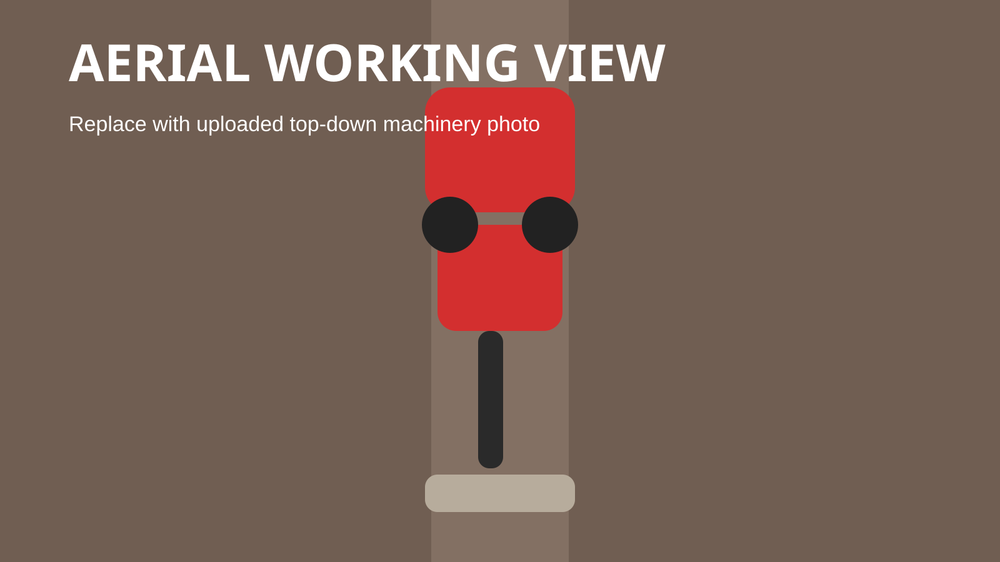

Improve Water Flow
A more even field helps water move across the surface properly, so you get less ponding, better infiltration, and fewer missed areas.

Land leveling for working farms.
Land leveling creates a more even surface for irrigation, drainage, and day-to-day field management. When the levels are right, water spreads more evenly, runoff is reduced, and the field becomes easier to farm.
What Is Land Leveling
Land leveling reshapes the field to create a more even surface with the right slope for irrigation. That helps water move across the field instead of collecting in low spots or running off the high areas.
When the field is leveled properly, water spreads more evenly, runoff is reduced, and soil moisture is easier to manage. It is about making irrigation easier and the field more consistent from one side to the other.

Why It Matters
A more even field helps water move across the surface properly, so you get less ponding, better infiltration, and fewer missed areas.
When the field levels are right, less water is wasted through runoff and deep percolation. That makes irrigation easier to control and easier to repeat well.
Better levels help keep more water where you need it, which improves retention and lowers the risk of runoff and erosion.
More even water usually leads to more even crop growth. That helps with germination, establishment, and overall field consistency through the season.
Field Output
Machinery & Technology

RTK keeps the machine close to plan so the finished field matches the design and the water can do what it is meant to do.
Controlled hydraulics help us manage cut and fill as we move, which keeps the finish steadier across the field.
The Case IH 340 gives steady pulling power so the job keeps moving across larger fields without losing control.
The ErdVark FGT 4000 gives consistent soil movement and accurate leveling over larger agricultural areas.

Our Process
We start by understanding the field properly. We measure the levels, look at how the water is moving now, and plan the slope that will work best for irrigation, drainage, and day-to-day farming. Then we level the field to match that plan as closely as possible.
Need Land Leveling?